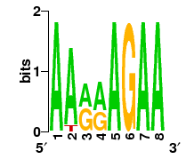
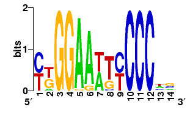
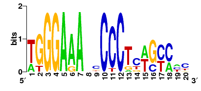

20170820_common_bins
GIMSAN output from job
20170820_common_bins
Run parameters (
command-line
):
Input file
common_bins.fa
Size of null set
20
Occurrences per sequence
ZOOPS (prior-weight = 0.2)
Process run time limit
-cput 300
Convergence rate
200
Double-strand
yes
Order of Markov background
5
Genomic file
input FASTA file
span: 8
, logo constructed from 12 sequences

Column pairs with statistically significant dependency (0 pairs)
Motif finder detailed output
span: 14
, logo constructed from 39 sequences

Column pairs with statistically significant dependency (0 pairs)
Motif finder detailed output
span: 20
, logo constructed from 12 sequences

Column pairs with statistically significant dependency (0 pairs)
Motif finder detailed output